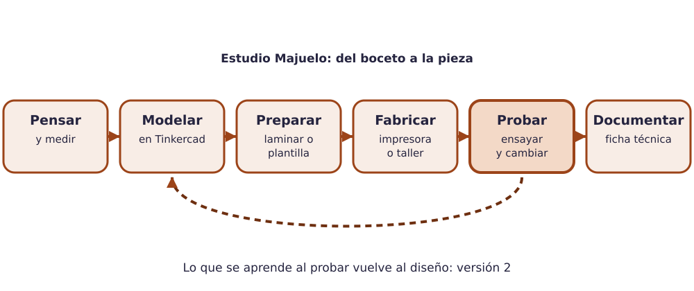

Contenido
Del boceto a la pieza
En esta unidad vas a aprender a diseñar objetos en 3D con el ordenador y a fabricarlos de verdad: con la impresora 3D y con las herramientas del taller. Al final, en equipo, diseñaréis, fabricaréis y probaréis una pieza útil para el centro.

Cómo vas a avanzar
- Aprender a diseñar: tu primer diseño en Tinkercad y tres retos individuales.
- Aprender a fabricar: cómo funciona una impresora 3D, el laminador y el taller.
- El proyecto en equipo: elegir, diseñar, fabricar, probar y documentar vuestra pieza.
- La prueba: modelar una pieza a partir de un plano.
Cada apartado empieza con la idea, sigue con los pasos y las capturas, y termina con «Ahora tú» para practicar. Si algo no te sale, vuelve al paso y pregunta: todo se hace en clase y no necesitas ordenador en casa.
Qué entregarás
| Quién | Qué | Cómo |
|---|---|---|
| Tú | Retos CAD 3D | Tres diseños: reto1.stl, reto2.stl y reto3.stl, con sus enlaces. |
| Tú | Prueba corta CAD | En clase: modelar una pieza desde un plano y contestar tres preguntas. |
| Equipo | Pieza final | El diseño, una foto de la pieza y el texto de la prueba. |
| Equipo | Ficha técnica abierta | ficha_tecnica.pdf. |
| Equipo | Presentación | Dos minutos en clase. |
| Equipo | Trabajo en el taller | Tu profesor observa cómo trabajáis. No se entrega nada. |
Todo se entrega en Moodle. No pongas nombres de personas ni fotos de caras en los archivos.